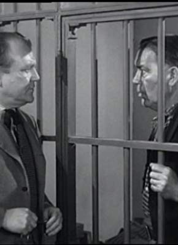

Meine Filme

Darsteller William Haade
Alle Darsteller
Nr.
Titel
Jahr
FSK
Minuten
Auflösung
IMDB
Meta
Genre
9072
Blut am Fargo River
1945
12
81
1080p
6.1 / 10
0
Western
4571
Früchte des Zorns
1940
12
123
SD
8.1 / 10
0
Drama
8070
Gangster in Key Largo
1948
16
100
1080p
7.9 / 10
0
Action
11676
Gejagten, Die
1952
16
85
1080p
7.0 / 10
0
Western
7002
Sergeant York
1941
12
134
1080p
7.8 / 10
0
Drama
3224
Unsichtbare Gegner
1951
12
83
1080p
6.3 / 10
0
Action
3827
Vater der Braut, Der
1950
12
92
SD
7.2 / 10
0
Komödie